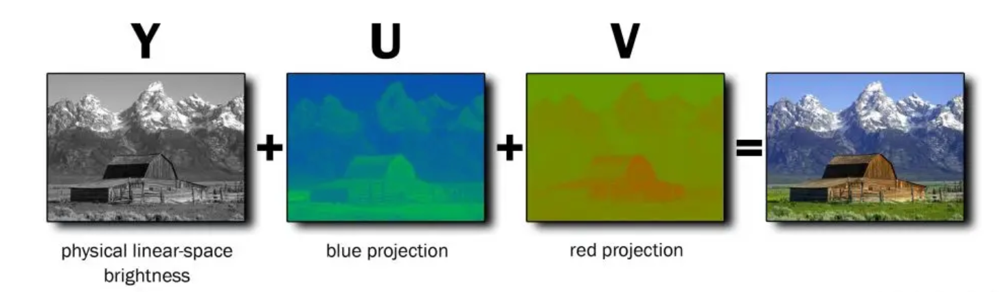
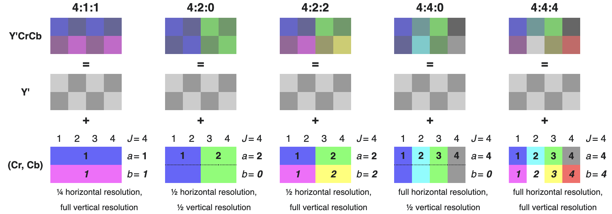
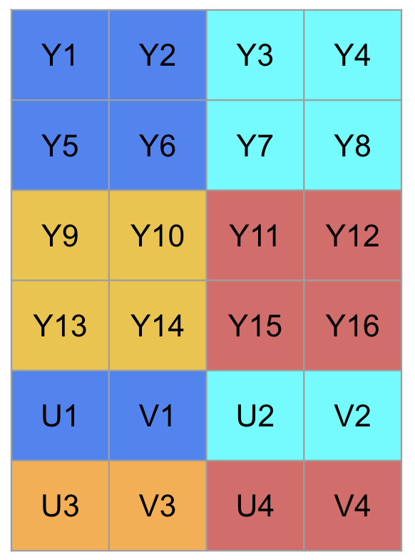
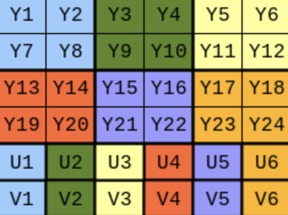
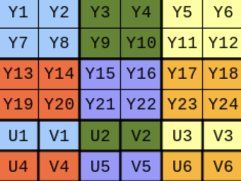
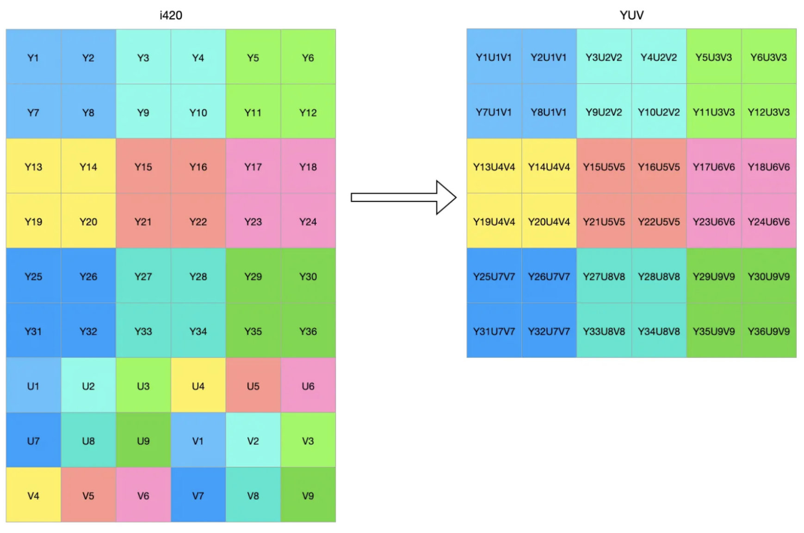

YUV Color Format
What is YUV?
How is it stored?
What are the variants?
1. What is YUV?
YUV format represents an image as three planes: Y, U and V. Y is the luma plane. U and V are reffered to as the chroma planes, which are basically the colors. All the YUV formats have these three planes, and differ by the different orderings of them. YUV is also referred as YCbCr (Y, color blue, color red).
Note: U-Cb, V-Cr.

2. Chroma Subsampling
Various YUV formats, like 420, 422, and others, are often mentioned. This is because downsampling is typically applied to chroma planes, considering that the human eye is less perceptive to color than luminance. So, we could save more space by keeping less information about colors.
The subsampling scheme is commonly expressed as a three-part ratio J:a:b (e.g. 4:2:2), that describe the number of luminance and chrominance samples in a conceptual region that is J pixels wide and 2 pixels high.

- J: horizontal sampling reference (width of the conceptual region). Usually, 4.
- a: number of chrominance samples (Cr, Cb) in the first row of J pixels.
- b: number of changes of chrominance samples (Cr, Cb) between first and second row of J pixels. b has to be either zero or equal to a.
Let’s assume that:
- Image resolution is .
- J:a:b = 4:2:0 (YUV420)

For YUV420, each U(V) corresponds to a 2x2 Y block. In other words, one pair of UV corresponds to 4(2x2) Y pixels.
Then we have resolutions for Cb and Cr planes:
- Cb plane: .
- Cr plane: .
3. Pixel Order
YUV formats are either:
- Packed (or interleaved)
- Planar (the names of those formats often end with “p”)
- Semi-planar (the names of those formats often end with “sp”)
3.1 Packed(interleaved)
Y1U1Y2V1 Y3U2Y4V2 ... ...
3.2 Planar
[Y1Y2......][Cb1Cb2......][Cr1Cr2.......]

3.3 Semi-planar
[Y1Y2......][Cb1Cr1Cb2Cr2......]

3.4 Different types of YUV420
| YUV420 format | Order | Detail |
|---|---|---|
| i420 | Y+U+V | Three planes are separated. U comes before V. |
| YV12 | Y+V+U | Three planes are separated. V comes before U. |
| NV12 | Y+UV | Y plane is separated from UV plane. UVs are interleaved. U comes before V. |
| NV21 | Y+U+V | Y plane is separated from UV plane. UVs are interleaved. V comes before U. |
4. YUV420 to YUV

A general YUV420 example and its YUV conversion.
Based on the above figure, let’s say we want to get , which is . What we need from are:
The position of Y in i420 should keep the same as in YUV. So we have:
Then, in order to get the position of in i420, let’s first compute the offset in U plane given
In this case, , which is expected due to zero indexing. Then, we can get the position of in i420 as:
To get the position of in i420, we need to skip the U plane and repeat the same compute.
Other YUV420 formats such as YV12, NV12 and NV21 can also be converted to YUV in similar approaches.
References
YUV Color Format